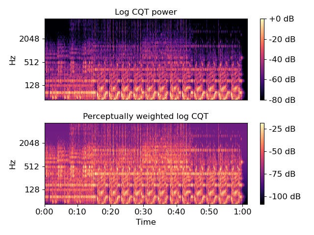

Caution
You're reading an old version of this documentation. If you want up-to-date information, please have a look at 0.9.1.
librosa.core.perceptual_weighting¶
- librosa.core.perceptual_weighting(S, frequencies, **kwargs)[source]¶
Perceptual weighting of a power spectrogram:
S_p[f] = A_weighting(f) + 10*log(S[f] / ref)
- Parameters
- Snp.ndarray [shape=(d, t)]
Power spectrogram
- frequenciesnp.ndarray [shape=(d,)]
Center frequency for each row of S
- kwargsadditional keyword arguments
Additional keyword arguments to
power_to_db.
- Returns
- S_pnp.ndarray [shape=(d, t)]
perceptually weighted version of S
See also
Notes
This function caches at level 30.
Examples
Re-weight a CQT power spectrum, using peak power as reference
>>> y, sr = librosa.load(librosa.util.example_audio_file()) >>> C = np.abs(librosa.cqt(y, sr=sr, fmin=librosa.note_to_hz('A1'))) >>> freqs = librosa.cqt_frequencies(C.shape[0], ... fmin=librosa.note_to_hz('A1')) >>> perceptual_CQT = librosa.perceptual_weighting(C**2, ... freqs, ... ref=np.max) >>> perceptual_CQT array([[ -80.076, -80.049, ..., -104.735, -104.735], [ -78.344, -78.555, ..., -103.725, -103.725], ..., [ -76.272, -76.272, ..., -76.272, -76.272], [ -76.485, -76.485, ..., -76.485, -76.485]])
>>> import matplotlib.pyplot as plt >>> plt.figure() >>> plt.subplot(2, 1, 1) >>> librosa.display.specshow(librosa.amplitude_to_db(C, ... ref=np.max), ... fmin=librosa.note_to_hz('A1'), ... y_axis='cqt_hz') >>> plt.title('Log CQT power') >>> plt.colorbar(format='%+2.0f dB') >>> plt.subplot(2, 1, 2) >>> librosa.display.specshow(perceptual_CQT, y_axis='cqt_hz', ... fmin=librosa.note_to_hz('A1'), ... x_axis='time') >>> plt.title('Perceptually weighted log CQT') >>> plt.colorbar(format='%+2.0f dB') >>> plt.tight_layout() >>> plt.show()
